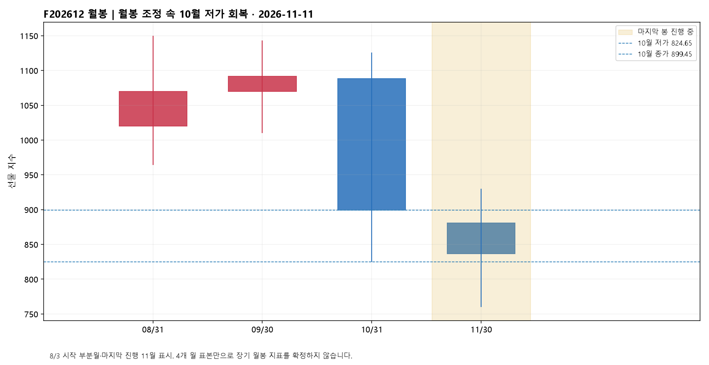
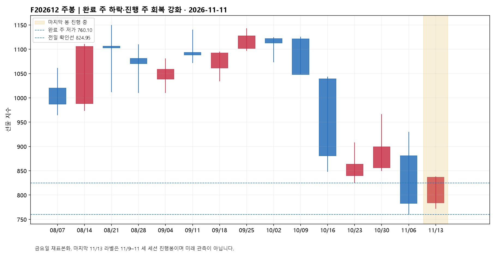
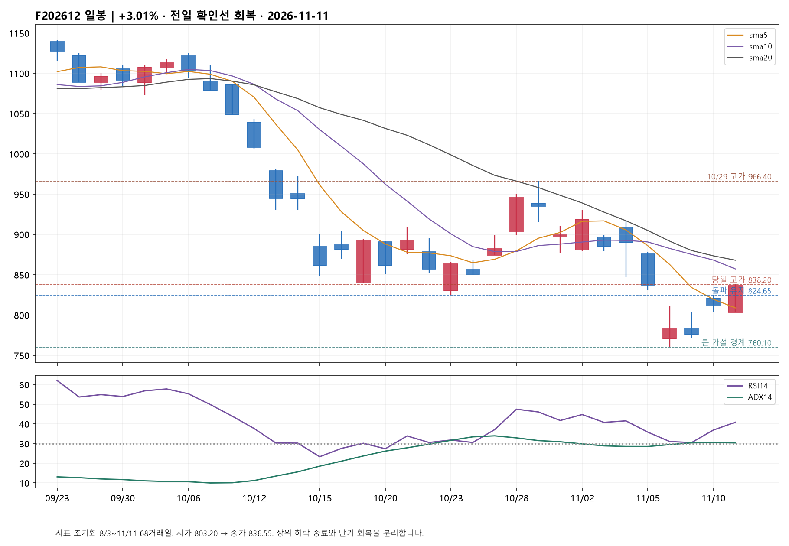
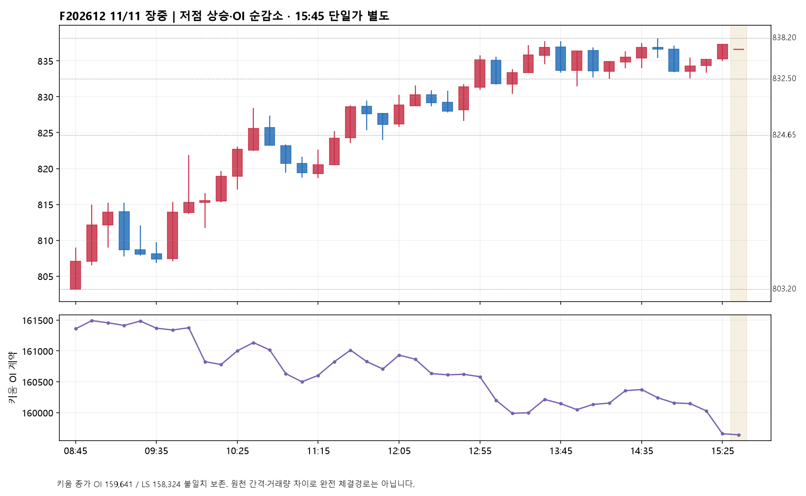
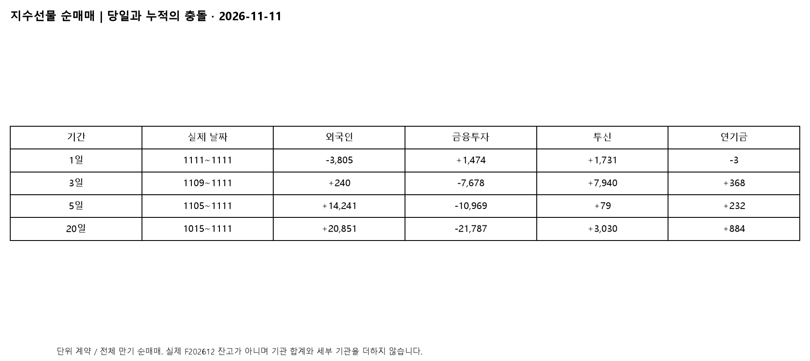
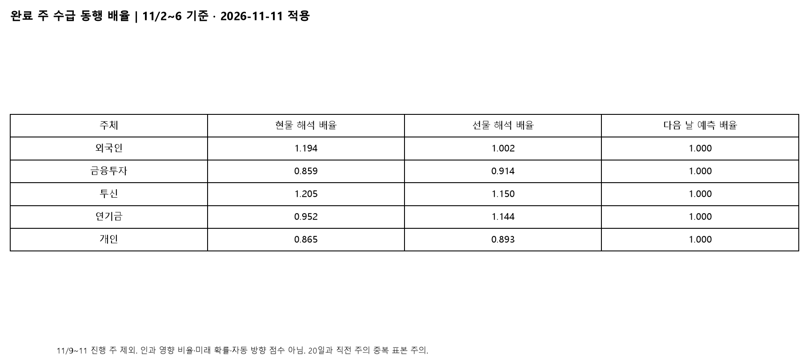
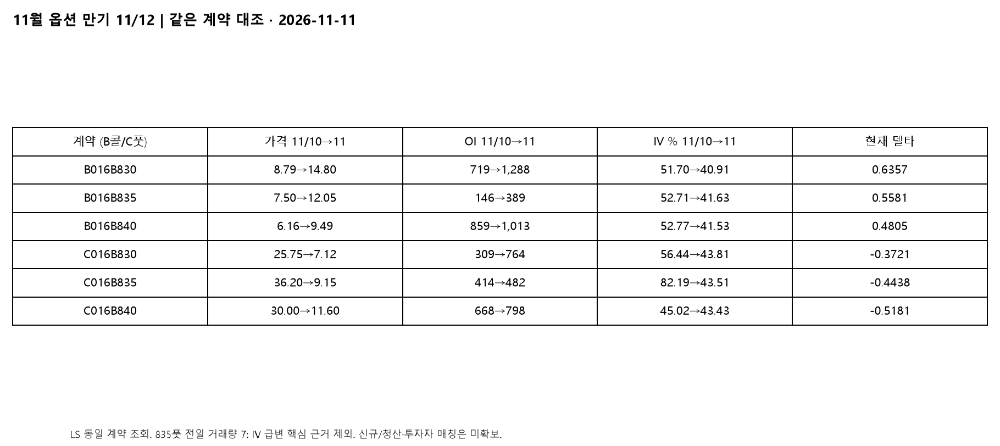

F202612 / A016C000 · 정규장 836.55 · 이후 야간 미반영
단기 회복 우세 유지·상향 확인 / 12월물 836.55. 전일 확인선 824.95를 종가로 돌파했고 현물 외국인·투신 매수가 지지했습니다. 첫 눌림 832.50~832.65, 핵심 재지지 824.65~824.95 / 838.20 돌파·재지지 후 846.85 확인. 내일 11월 옵션 만기, 상위 하락구조 종료는 아직 미확정입니다.
전일 제시한 824.95 위 일봉 종가 조건은 오늘 836.55로 충족했습니다. 이전 회복 구간 830.60도 넘었고 다음 경계였던 837.25는 장중 넘어섰지만 종가로는 아래여서 모두 돌파 완료라고 하지 않습니다. 선호 가설은 11/6 저점 760.10→11/9 저점 771.55→11/10 저점 802.95→오늘 803.20으로 높아진 저점에서 반등이 연장되는 것입니다. 상위 10/29 고점 966.40 이후 조정 안의 A 또는 1파 후보이며 하위 5파·차수는 미확정입니다. 과거 824.65 출발 상승 가설의 실패를 새 지지선으로 덮은 것이 아니라 새로운 760.10 이후 회복 가지를 평가합니다. 완료 10분봉으로 832.50~832.65를 지키고 재지지하면 837.25~838.20 재돌파를 봅니다. 838.20 위 일봉 종가와 다음 세션 재지지 시 다음 실제 일봉 경계 846.85(11/4 저가), 이후 857.28·868.05의 현재 10·20일선 회복 여부를 순서대로 확인합니다. 이동평균은 다음 날 변하며 고정 목표가가 아닙니다. 반대 가설은 큰 하락 중 반등이 837.25~838.20에서 소진되는 경우입니다. 832.50 이탈 후 10분봉 재회복 실패는 단기 약화, 824.65 아래 일봉 종가와 재저항은 전일 고점 돌파 유지 가설 철회입니다. 803.20 실제 저가 침범은 오늘 저점 가지를, 802.95 침범은 전일 저점 가지를 각각 철회합니다. 771.55와 760.10은 더 큰 회복 가설의 하단이며 760.10 침범은 바닥 형성 가설 무효입니다.
오늘 지수선물은 외국인 −3,805계약에 맞서 기관계 +2,992, 개인 +634, 기타법인 +179계약이 순매수했습니다. 기관 안에서는 금융투자 +1,474·투신 +1,731, 보험 −234·은행 −6·연기금 −3으로 갈렸습니다. 기관 합계와 세부 주체를 더하지 않습니다. 전일 투신 +4,610보다 매수량은 줄었지만 금융투자는 −3,632에서 매수로 전환했고, 가격은 전일과 달리 시가 위에서 강하게 마감했습니다. 적은 순매수에도 가격 반응이 커질 수 있다는 사용자의 관찰과 양립하지만 인과적 가격 충격계수를 확인한 것은 아닙니다. 외국인 선물은 최근 3일 +240·5일 +14,241·20일 +20,851계약으로 누적 매수와 오늘 매도가 충돌합니다. 투신은 3일 +7,940·5일 +79·20일 +3,030계약입니다. 최근 사흘 회복이 중요하지만 5일로 넓히면 앞선 매도를 겨우 되돌린 수준입니다. 선물 가격 변화는 같은 3·5·20일 각각 +53.60·−53.30·−107.65포인트라 누적 외국인 매수 자체를 상승 추세로 읽지 않습니다.
현물에서는 외국인과 투신이 이틀 연속 순매수했지만 기관 전체는 순매도로 바뀌었습니다. 오늘 LS 원자료는 외국인 +6,544·투신 +751·금융투자 −5,203·연기금 −990·기관 −4,814·개인 −7,137입니다. 고정 원화 단위는 명세에서 확인하지 못해 이 숫자를 억원으로 바꾸지 않았습니다. 기관·개인 세부 조회와 1단위 차이는 원본에 보존했습니다. 외국인 현물은 3일 +5,722이나 5일 −54,910·20일 −142,635로, 최근 매수와 긴 누적 매도를 구분합니다. 외국인 주식선물도 당일 −7,478계약(3일 +53,302·5일 +26,265·20일 +222,079)으로 현물과 반대입니다. 따라서 ‘외국인 전면 매수’가 아니라 현물 매수·파생 매도, 투신의 현선물 매수 조합입니다. 순매도 물량을 누가 받아냈는지는 시장 전체 순매매의 대응이며 동일 계좌 간 상대방을 확인한 것은 아닙니다. 프로그램은 차익 −111,863·비차익 +394,332·합계 +282,468 원자료값으로 비차익 매수가 우세했습니다. 3일 합계 +834,676, 5일 −2,287,046, 20일 −2,457,753으로 최근 회복과 누적 매도가 함께 있습니다. 끝자리 반올림 차이와 단위 미확인은 남겨둡니다. 선물 836.55와 KOSPI200 838.32의 보고 시장 베이시스 −1.77, LS 이론 베이시스 +1.85는 각 시장 종가 시각이 달라 동시각 차익이나 무위험 저평가의 증거로 쓰지 않습니다.
정규장 O803.20·H838.20·L803.20·C836.55, 전일 대비 +24.45(+3.01%), 시가 대비 +33.35(+4.15%)입니다. 전일은 갭 상승 뒤 시가 아래였지만 오늘은 약한 출발을 되받아 장중 상승을 확장했습니다. 08:45→12:05 봉 종가는 807.05→828.85(+21.80), OI는 161,359→160,933(−426)입니다. 12:05→15:25는 828.85→837.30(+8.45), OI −1,275입니다. 오전 10:15→10:35에는 가격 +6.70·OI +356, 오후 14:15→14:35에는 가격 +2.00·OI +220으로 참여 증가가 붙은 구간도 있어 하루 전체를 청산만으로 묶지 않습니다. 막판 15:05→15:25는 가격 +3.00·OI −489, 15:25→15:45 단일가는 가격 −0.75·OI −17입니다. 일중 흐름은 상승 우세지만 마감 가속이 신규 순계약 확대로 이어졌다고 보기는 어렵습니다. 원천 15:25→15:45 간격과 일봉 거래량 110,145/분봉·LS 107,710의 2,435 차이 때문에 정확한 VWAP·완전 체결매물대는 만들지 않았습니다.
키움 기준 12월물 OI는 159,641계약, 전일 161,673 대비 −2,032입니다. 전일 저장값과 오늘 재조회 전일값은 같습니다. 다만 LS는 오늘 158,324(전일 대비 −3,349)를 반환해 키움과 1,317계약 차이가 남았습니다. 두 번의 LS 종가 조회도 같은 값을 반환했습니다. 하나로 합치거나 일치로 처리하지 않고 키움 계열을 주 분석에, LS를 충돌 표시에 사용했습니다. 두 원천 모두 OI 감소 방향이므로 ‘포지션 축소를 동반한 상승’까지는 공통이지만 특정 외국인의 숏커버·신규 롱 규모는 알 수 없습니다. OI 감소만으로 상승을 무시하지 않습니다. 가격 +24.45와 현물 매수·회복선 돌파가 단기 강세의 직접 근거입니다. 키움의 3일 OI −2,852·5일 +7,293·20일 +11,876은 오늘 감소가 더 긴 누적 증가를 모두 해소한 것은 아님을 보여줍니다. 차기 2027년 3월물은 826.60·거래량 34·OI 5,672(+13)으로 얇아 12월물 감소를 일대일 롤오버로 설명할 수 없습니다.
11월물 같은 행사가의 콜 가격과 OI는 동반 상승했습니다. 830콜(B016B830)은 8.79→14.80, OI 719→1,288(+569), IV 51.70→40.91%, 델타 0.6357입니다. 835콜은 7.50→12.05, OI 146→389(+243), IV 52.71→41.63%, 델타 0.5581입니다. 840콜은 6.16→9.49, OI 859→1,013(+154), IV 52.77→41.53%, 델타 0.4805입니다. 즉 단순 콜 매도 청산만으로 전체 OI 순증을 설명할 수 없고 계약 참여가 늘었다는 점은 반영합니다. 동시에 IV가 내려 콜 상승을 변동성 급등보다 기초지수 상승과 함께 읽는 것이 타당합니다. 이것이 외국인의 해당 행사가 신규 매수 증명은 아닙니다. 신규 롱·숏은 짝이며 투자자별 개시·청산 자료는 없습니다. 외국인 전체 콜 순매매는 −1,886계약/+4억원, 풋은 −2,472계약/+47억원으로 수량과 금액 부호가 다릅니다. 기관 콜 −1,194계약/+14억원, 풋 −3,159계약/−54억원도 만기·행사가 배분 없이는 단일 방향 포지션으로 환산하지 않습니다. 830·835·840풋 가격은 각각 25.75→7.12, 36.20→9.15, 30.00→11.60으로 하락했지만 OI는 +455·+68·+130 증가해 풋 쪽 참여도 늘었습니다. 대표 IV는 67.27→57.99, 콜 49.42·풋 69.23으로 낮아졌으나 대표치 차이를 고정 델타 스큐라고 부르지는 않습니다. 835콜·풋은 LS greeks_time 16:30/당일확정이고 최종 체결시각과는 구분합니다. 전일 835풋은 거래량 7로 IV 82.19→43.51 변화에 비유동성 영향이 커 이를 공포 완화의 핵심 근거로 삼지 않습니다.
분석일 11/11은 KOSPI200 11월물 옵션 만기 전일입니다. 공식 증권사 계약명세의 두 번째 목요일 규칙과 LS 11월물 835콜·풋의 최종거래일 20261112를 대조했습니다. 12월 옵션과 F202612 선물의 최종거래일은 20261210으로 별개입니다. 11월 835콜 IV 41.63%·풋 43.51%, 12월 같은 행사가 콜 44.59%·풋 49.32%의 조회값을 분리 표시합니다. 고정 행사가 단면이며 델타·거래시각·유동성이 달라 완전한 동일델타 기간구조는 아닙니다. 12월 835콜 OI 69(+61)·풋 478(+56) 증가도 11월물의 동일 주체 롤이라고 확정할 수 없습니다. 만기 전 현물·프로그램과 선물 매매가 갈릴 때 방향 매매 외에 청산·헤지 조정이 반대 설명입니다. 만기일의 832.50~832.65 유지와 838.20 돌파를 먼저 보되, 만기 이후 11/13에도 824.65~824.95 위 재지지와 현물 외국인·투신 매수가 이어지는지 확인해야 만기성 효과를 넘어선 회복으로 평가할 수 있습니다. 옵션 OI가 많은 행사가를 자석 가격·최대고통으로 만들거나 감마 부호를 추정하지 않습니다.
완료 주 11/2~11/6과 10/12~11/6의 20거래일로 고정한 해석 배율은 현물 외국인 1.194·투신 1.205·금융투자 0.859, 선물 외국인 1.002·투신 1.150·연기금 1.144·금융투자 0.914입니다. 최근 표본에서는 외국인 현물과 투신의 가격 동행을 우선 확인하되 외국인 선물 매도를 단독 하락 신호로 쓰지 않습니다. 시장을 움직인 인과 비율이나 다음 날 확률은 아닙니다. 11/9~11 진행 주는 배율 산출에서 제외하고 그날의 수급에 곱한 방향점수도 만들지 않았습니다. 10/12~11/11 재조회 표본에서 외국인·투신 현물 동반 매수·당일 상승 뒤 다음 날 상승은 완료 6건 중 3건(50%), 동반 매도·하락 뒤 하락은 10건 중 4건(40%)입니다. 선물은 각각 1/3, 0/2입니다. 전일 현물 사건의 오늘 상승이 추가됐고 오늘 사건은 대기로 제외했습니다. 이 소표본은 미래 확률이 아니며 모든 예측 배율은 1.0, 옵션 배율은 미산출입니다.
9/11~11/11의 LS 단일 원천 40거래일을 공식 정규장 달력과 대조했습니다. 외국인 +23,764·기관 −22,466·금융투자 −17,053·투신 −2,416·연기금 +1,192계약입니다. 현재 선물 월물 관찰 구간이지만 수급 조회는 전체 만기 합산이어서 F202612 실제 누적 잔고로 부르지 않습니다. 기존 장부는 같은 구간 28일만 있어 부분합 외국인 +24,893·기관 −23,374를 완결 시계열과 섞지 않습니다. 겹치는 9/21 외국인 4,127/4,251·기관 −3,748/−3,963, 9/23 외국인 62/1,356·기관 −1,209/−1,402는 저장 HTS와 현재 LS의 차이이며 원인은 미확정입니다. 오늘 현물 재조회는 전일 게시 때 저장한 11/10 외국인 +4,161과 달리 +4,440을 반환했습니다. 전체 기간을 이번 단일 조회로 다시 계산하되 이전 원본을 보존하고 서로 이어 붙이지 않았습니다.
보조 현물 KOSPI는 5,375.36(+2.60%), 시가 5,209.71보다 높은 마감이며 LS t8429·키움 ka20006·ka20001 종가가 일치합니다. KOSPI200은 838.32(+2.95%)입니다. ka20001의 상승 575·하락 296·보합 41로 상승 종목이 더 많아 지수 하나의 상승만 있는 날은 아닙니다. 다만 주도주 제외 시장의 투자자 수급은 미확보입니다. LS 프로그램 종목 조회에서 삼성전자 +3.57%와 SK하이닉스 +5.45%는 함께 올랐지만 프로그램 순매매 부호는 각각 매수와 매도로 갈렸습니다. 이것을 외국인 수급이나 정확한 지수 기여도로 치환하지 않습니다. 국내·해외 다중시간대와 시장환경 파일은 11/10 기준이라 오늘 확정 근거에서 제외했습니다. 해외 충격의 당일 원인은 별도 검증되지 않았습니다.

10월 저가 824.65를 회복했으나 10월 종가 899.45 아래입니다. 진행 11월 O880.80·H930.00·L760.10·C836.55.

완료 11/6주 O880.80·H930.00·L760.10·C782.95. 진행 11/9~11은 O784.00·H838.20·L771.55·C836.55.

전일 제시한 824.95 위 일봉 종가 조건은 오늘 836.55로 충족했습니다. 이전 회복 구간 830.60도 넘었고 다음 경계였던 837.25는 장중 넘어섰지만 종가로는 아래여서 모두 돌파 완료라고 하지 않습니다. 선호 가설은 11/6 저점 760.10→11/9 저점 771.55→11/10 저점 802.95→오늘 803.20으로 높아진 저점에서 반등이 연장되는 것입니다. 상위 10/29 고점 966.40 이후 조정 안의 A 또는 1파 후보이며 하위 5파·차수는 미확정입니다. 과거 824.65 출발 상승 가설의 실패를 새 지지선으로 덮은 것이 아니라 새로운 760.10 이후 회복 가지를 평가합니다. 완료 10분봉으로 832.50~832.65를 지키고 재지지하면 837.25~838.20 재돌파를 봅니다. 838.20 위 일봉 종가와 다음 세션 재지지 시 다음 실제 일봉 경계 846.85(11/4 저가), 이후 857.28·868.05의 현재 10·20일선 회복 여부를 순서대로 확인합니다. 이동평균은 다음 날 변하며 고정 목표가가 아닙니다. 반대 가설은 큰 하락 중 반등이 837.25~838.20에서 소진되는 경우입니다. 832.50 이탈 후 10분봉 재회복 실패는 단기 약화, 824.65 아래 일봉 종가와 재저항은 전일 고점 돌파 유지 가설 철회입니다. 803.20 실제 저가 침범은 오늘 저점 가지를, 802.95 침범은 전일 저점 가지를 각각 철회합니다. 771.55와 760.10은 더 큰 회복 가설의 하단이며 760.10 침범은 바닥 형성 가설 무효입니다.

정규장 O803.20·H838.20·L803.20·C836.55, 전일 대비 +24.45(+3.01%), 시가 대비 +33.35(+4.15%)입니다. 전일은 갭 상승 뒤 시가 아래였지만 오늘은 약한 출발을 되받아 장중 상승을 확장했습니다. 08:45→12:05 봉 종가는 807.05→828.85(+21.80), OI는 161,359→160,933(−426)입니다. 12:05→15:25는 828.85→837.30(+8.45), OI −1,275입니다. 오전 10:15→10:35에는 가격 +6.70·OI +356, 오후 14:15→14:35에는 가격 +2.00·OI +220으로 참여 증가가 붙은 구간도 있어 하루 전체를 청산만으로 묶지 않습니다. 막판 15:05→15:25는 가격 +3.00·OI −489, 15:25→15:45 단일가는 가격 −0.75·OI −17입니다. 일중 흐름은 상승 우세지만 마감 가속이 신규 순계약 확대로 이어졌다고 보기는 어렵습니다. 원천 15:25→15:45 간격과 일봉 거래량 110,145/분봉·LS 107,710의 2,435 차이 때문에 정확한 VWAP·완전 체결매물대는 만들지 않았습니다.

오늘 지수선물은 외국인 −3,805계약에 맞서 기관계 +2,992, 개인 +634, 기타법인 +179계약이 순매수했습니다. 기관 안에서는 금융투자 +1,474·투신 +1,731, 보험 −234·은행 −6·연기금 −3으로 갈렸습니다. 기관 합계와 세부 주체를 더하지 않습니다. 전일 투신 +4,610보다 매수량은 줄었지만 금융투자는 −3,632에서 매수로 전환했고, 가격은 전일과 달리 시가 위에서 강하게 마감했습니다. 적은 순매수에도 가격 반응이 커질 수 있다는 사용자의 관찰과 양립하지만 인과적 가격 충격계수를 확인한 것은 아닙니다. 외국인 선물은 최근 3일 +240·5일 +14,241·20일 +20,851계약으로 누적 매수와 오늘 매도가 충돌합니다. 투신은 3일 +7,940·5일 +79·20일 +3,030계약입니다. 최근 사흘 회복이 중요하지만 5일로 넓히면 앞선 매도를 겨우 되돌린 수준입니다. 선물 가격 변화는 같은 3·5·20일 각각 +53.60·−53.30·−107.65포인트라 누적 외국인 매수 자체를 상승 추세로 읽지 않습니다.

완료 주 11/2~11/6과 10/12~11/6의 20거래일로 고정한 해석 배율은 현물 외국인 1.194·투신 1.205·금융투자 0.859, 선물 외국인 1.002·투신 1.150·연기금 1.144·금융투자 0.914입니다. 최근 표본에서는 외국인 현물과 투신의 가격 동행을 우선 확인하되 외국인 선물 매도를 단독 하락 신호로 쓰지 않습니다. 시장을 움직인 인과 비율이나 다음 날 확률은 아닙니다. 11/9~11 진행 주는 배율 산출에서 제외하고 그날의 수급에 곱한 방향점수도 만들지 않았습니다. 10/12~11/11 재조회 표본에서 외국인·투신 현물 동반 매수·당일 상승 뒤 다음 날 상승은 완료 6건 중 3건(50%), 동반 매도·하락 뒤 하락은 10건 중 4건(40%)입니다. 선물은 각각 1/3, 0/2입니다. 전일 현물 사건의 오늘 상승이 추가됐고 오늘 사건은 대기로 제외했습니다. 이 소표본은 미래 확률이 아니며 모든 예측 배율은 1.0, 옵션 배율은 미산출입니다.

11월물 같은 행사가의 콜 가격과 OI는 동반 상승했습니다. 830콜(B016B830)은 8.79→14.80, OI 719→1,288(+569), IV 51.70→40.91%, 델타 0.6357입니다. 835콜은 7.50→12.05, OI 146→389(+243), IV 52.71→41.63%, 델타 0.5581입니다. 840콜은 6.16→9.49, OI 859→1,013(+154), IV 52.77→41.53%, 델타 0.4805입니다. 즉 단순 콜 매도 청산만으로 전체 OI 순증을 설명할 수 없고 계약 참여가 늘었다는 점은 반영합니다. 동시에 IV가 내려 콜 상승을 변동성 급등보다 기초지수 상승과 함께 읽는 것이 타당합니다. 이것이 외국인의 해당 행사가 신규 매수 증명은 아닙니다. 신규 롱·숏은 짝이며 투자자별 개시·청산 자료는 없습니다. 외국인 전체 콜 순매매는 −1,886계약/+4억원, 풋은 −2,472계약/+47억원으로 수량과 금액 부호가 다릅니다. 기관 콜 −1,194계약/+14억원, 풋 −3,159계약/−54억원도 만기·행사가 배분 없이는 단일 방향 포지션으로 환산하지 않습니다. 830·835·840풋 가격은 각각 25.75→7.12, 36.20→9.15, 30.00→11.60으로 하락했지만 OI는 +455·+68·+130 증가해 풋 쪽 참여도 늘었습니다. 대표 IV는 67.27→57.99, 콜 49.42·풋 69.23으로 낮아졌으나 대표치 차이를 고정 델타 스큐라고 부르지는 않습니다. 835콜·풋은 LS greeks_time 16:30/당일확정이고 최종 체결시각과는 구분합니다. 전일 835풋은 거래량 7로 IV 82.19→43.51 변화에 비유동성 영향이 커 이를 공포 완화의 핵심 근거로 삼지 않습니다. 분석일 11/11은 KOSPI200 11월물 옵션 만기 전일입니다. 공식 증권사 계약명세의 두 번째 목요일 규칙과 LS 11월물 835콜·풋의 최종거래일 20261112를 대조했습니다. 12월 옵션과 F202612 선물의 최종거래일은 20261210으로 별개입니다. 11월 835콜 IV 41.63%·풋 43.51%, 12월 같은 행사가 콜 44.59%·풋 49.32%의 조회값을 분리 표시합니다. 고정 행사가 단면이며 델타·거래시각·유동성이 달라 완전한 동일델타 기간구조는 아닙니다. 12월 835콜 OI 69(+61)·풋 478(+56) 증가도 11월물의 동일 주체 롤이라고 확정할 수 없습니다. 만기 전 현물·프로그램과 선물 매매가 갈릴 때 방향 매매 외에 청산·헤지 조정이 반대 설명입니다. 만기일의 832.50~832.65 유지와 838.20 돌파를 먼저 보되, 만기 이후 11/13에도 824.65~824.95 위 재지지와 현물 외국인·투신 매수가 이어지는지 확인해야 만기성 효과를 넘어선 회복으로 평가할 수 있습니다. 옵션 OI가 많은 행사가를 자석 가격·최대고통으로 만들거나 감마 부호를 추정하지 않습니다.
작성 2026-11-11T17:24:38.825269+09:00 · 조건부 해설, 미래 확률·주문·비중 지시 아님